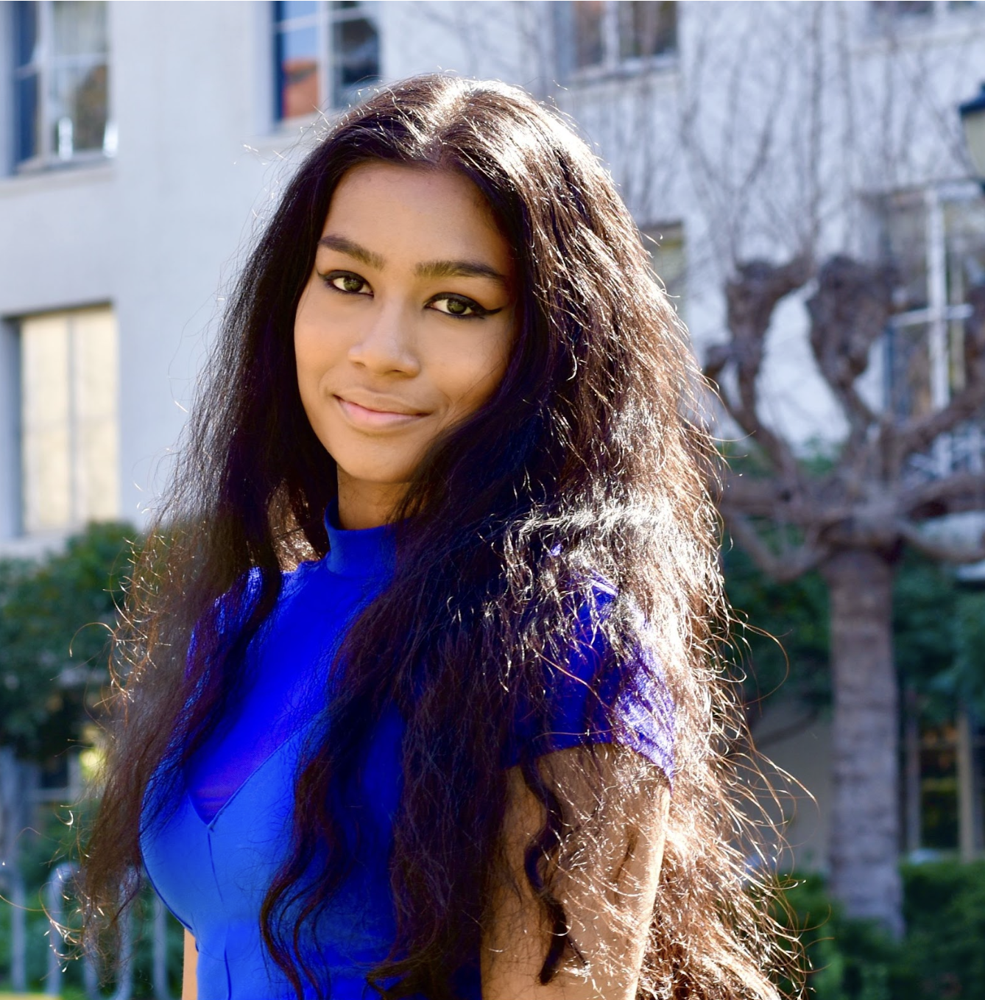
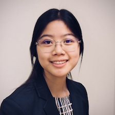
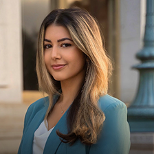

Officers
Executive Board Spring 2023
 Sofia Theodoras (she/her) - [Co-President] LinkedIn
Sofia Theodoras (she/her) - [Co-President] LinkedIn
is a junior studying Molecular and Cell Biology (Immunology track) and Computer Science who is interested in immunology and genetics.
As an undergraduate researcher in the Conboy Lab, she's putting the research skills he gained in TMSCA to good use as she investigates stem cell biology and the mechanisms of aging.
In her free time she trains her cats in both obedience and agility, and she loves cooking/baking.
 Jack Wong (he/him) - [Co-President] LinkedIn
Jack Wong (he/him) - [Co-President] LinkedIn
is a junior from Hong Kong majoring in Molecular and Cell Biology, Neurobiology and minoring in Data Science. He joined TMSCA in his freshmen year because he was interested in learning more about stem cells and getting involved with research at Berkeley. As an undergraduate researcher at Conboy Lab, he hopes to help people through stem cell research.
Committee Coordinators
 Beatrice Le (she/her) - [Events Coordinator] LinkedIn
Beatrice Le (she/her) - [Events Coordinator] LinkedIn
is a fourth-year studying Microbial Biology and Data Science at UC Berkeley. Her research skills and interests lie at the intersection of gene delivery, translational medicine, computational biology, virology, structural biology, and biophysics. She is about to pursue a PhD in Vision Science to solve existing problems in the gene therapy space and contribute to the mission of fighting blindness. She is currently a part of the Flannery and Brodie Lab, developing retinal bipolar cell promoter constructs for AAV delivery and microbial trait modeling under dynamic moisture conditions, respectively. Outside of her free time, she enjoys painting, cooking, baking, reading, and watching NBA Warrior games (Go Warriors!).
 Michael Ni (he/him) - [Events Coordinator] LinkedIn
Michael Ni (he/him) - [Events Coordinator] LinkedIn
is a 3rd-year student in the Robinson Life Science, Business, and Entrepreneurship program at UC Berkeley, majoring in Molecular & Cell Biology and Business Administration. He is keen on bio-entrepreneurship and envisions leveraging his own research to transform the world from fundamental facets - like basic needs in food, water, and healthcare. He plans a career in investment banking in the short term. In the long term, he plans to pursue an MD-PhD program while exploring the intersection of biology and business by continuously going after entreprenuership opportunities.
 Vitto Resnick (he/him) - [Academia Coordinator] LinkedIn
Vitto Resnick (he/him) - [Academia Coordinator] LinkedIn
is a third-year student and undergraduate researcher at UC Berkeley, majoring in Chemical Biology with concentration in Computational Chemistry, Psychology, Molecular & Cellular Biology with an emphasis on Neurobiology, and Nutritional Sciences & Toxicology - Physiology & Metabolism. His research interests are in chemoproteomics, ion channel structure and dynamics, computational neuroscience, and bioprinting with fibrin-hydrogel scaffolds. He works in the Flannery Lab and Bouchard/NSDS Lab at LBNL. His current research project studies how different complex sounds are encoded in the mammalian primary auditory cortex. He is also a team lead for Bioprinting @ Berkeley and is working on creating a fibrin factor XIII-hyaluronic acid hydrogel scaffold that can encapsulate rat Schwann cells as a model of potential neurite regeneration techniques. Some of his extracurricular interests are tennis, poetry, studying foreign languages, and powerlifting.
 Neel Patel (he/him) - [Academia Coordinator] LinkedIn
Neel Patel (he/him) - [Academia Coordinator] LinkedIn
is a Microbial Biology major at UC Berkeley and is a research assistant at GBSMRC. In his free time, he enjoys traveling, sports, and the outdoors.
Debora Ghosh (she/her) - [Academia Coordinator] LinkedIn
is a third-year student majoring in Molecular and Cell Biology - Neurobiology and minoring in Mathematics and Nutritional Sciences. Her research interests lie in neuroscience, particularly synaptic integration in the hippocampus, neurosurgery, Alzheimers Disease, and oncology. She has worked alongside providers, working on case reports and is an Undergraduate Research Assistant in a neurobiology lab at Berkeley (The Gomez Lab). She is currently part of the Associated Students University of California Health Advocacy Committee, and envisions reducing health inequities while pursuing clinical research. Debora has also been a Teaching Assistant in a Math course at Berkeley and currently works as Math Tutor through her university’s tutoring center. She has also worked with Lenox Hill Hospital Neurosurgery as a BRAINTerns Student Ambassador and has co-led telehealth platform content development at a biotech startup. Debora spends her time scribing at a community health clinic and volunteering at her university health center. In her free time, she enjoys weightlifting and cooking high protein meals! She intends to pursue an MD to further pursue her interests in medicine while serving her community and working towards reducing the prevalence of neurodegenerative diseases.
 Christine Zhu (she/her) - [Outreach Coordinator] LinkedIn
Christine Zhu (she/her) - [Outreach Coordinator] LinkedIn
is a Public Health/Data Science major, doing the research in Niyogi Lab on Chromochloris zofingiensis algae to try to understand the role of hexokinase in biosynthesis. Her hobbies are knitting, crochet, pottery, reading, and hiking.
Officers
Sabrina Fong (she/her) - [Industry Relations] LinkedIn
is a MCB major researching abnormal metabolisms in cancer, senescence, and fibrosis in the Conboy Lab. She is interested in supporting innovation and delivering novel therapies to patients. When not hanging out with people from TMSCA, she enjoys reading, sketching, and trying new food!
Halime Yilmaz (she/her) - [Social/PR Chair] LinkedIn
is a Chemical Biology and Toxicology Major, who does research in proteomics with the Nomura Lab. My hobbies include drawing, hiking or doing yoga, and cafe hoping!